Family Photographs
Portraits, snapshots, and moments from the Burchell family of Glace Bay
Ernest & Annie Burchell
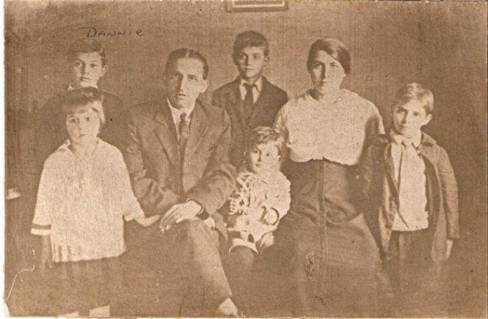
Ernest and Annie Burchell with their children
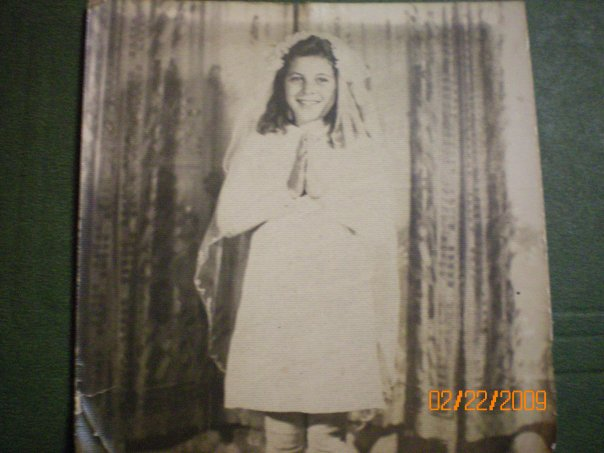
Annie Burchell — Howard's mother
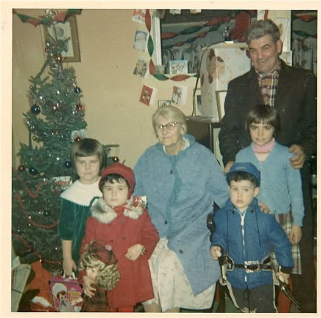
The Burchell children — Marie is far right
Danny Burchell
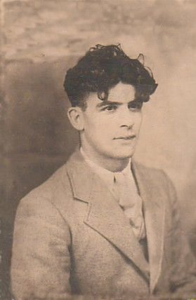
Danny Burchell
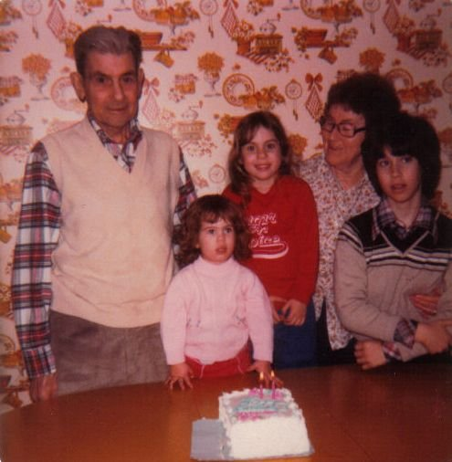
Danny Burchell in later years
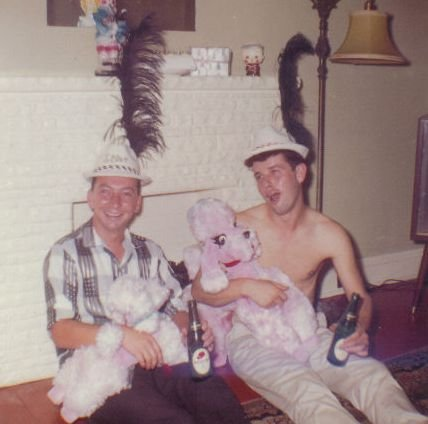
Danny Burchell with his son Butch
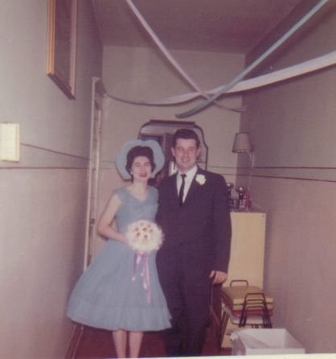
Danny Burchell's children
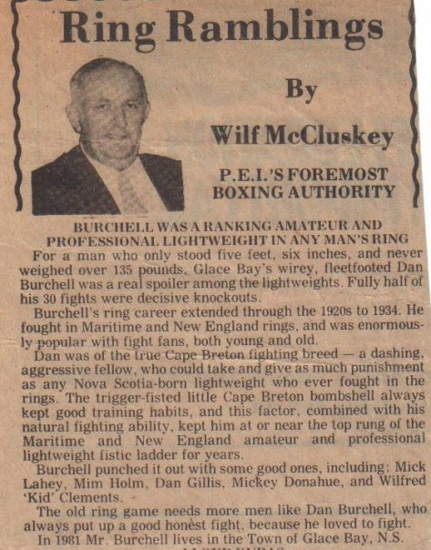
Danny Burchell — newspaper clipping
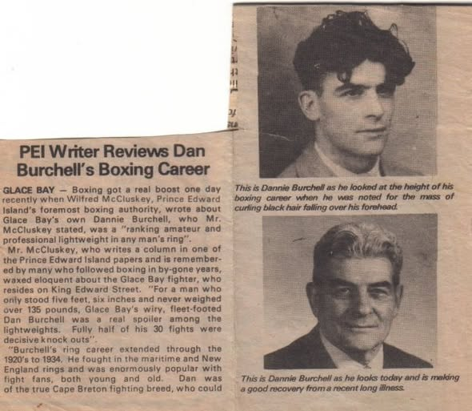
Danny Burchell — newspaper clipping (2)
Howard & Rita Burchell
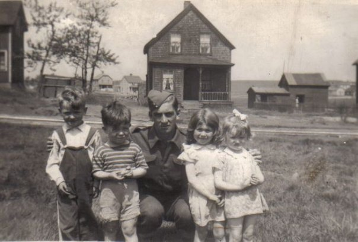
Howard Burchell — wartime photograph
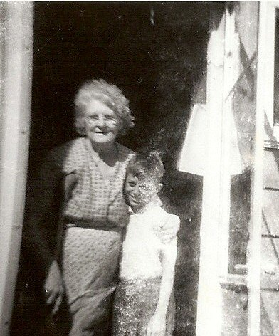
Howard Burchell as a child
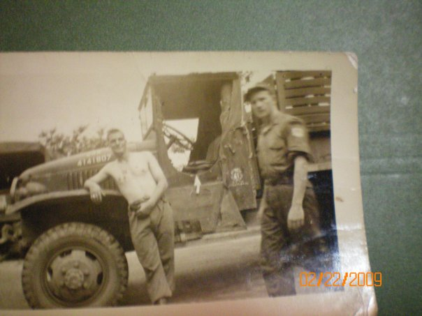
Howard and Alex Burchell
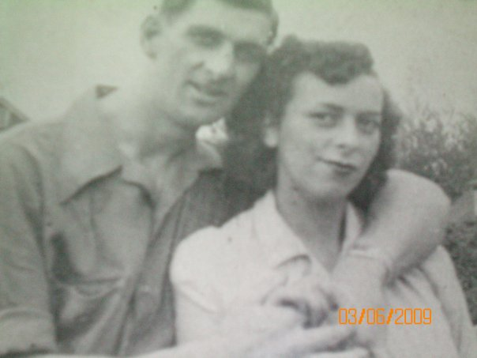
Rita and Howard Burchell
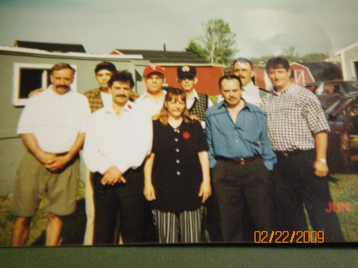
Rita and Howard Burchell's children
Howard's Brothers
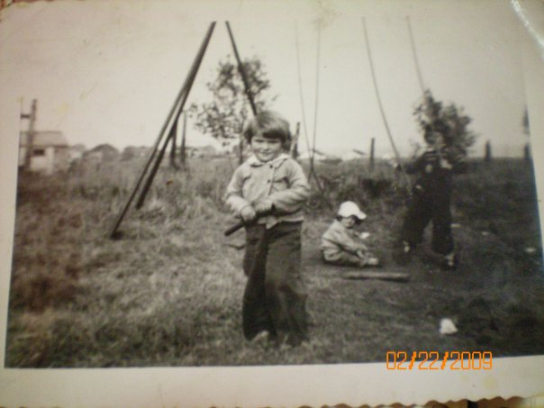
Alex Burchell — Howard's brother
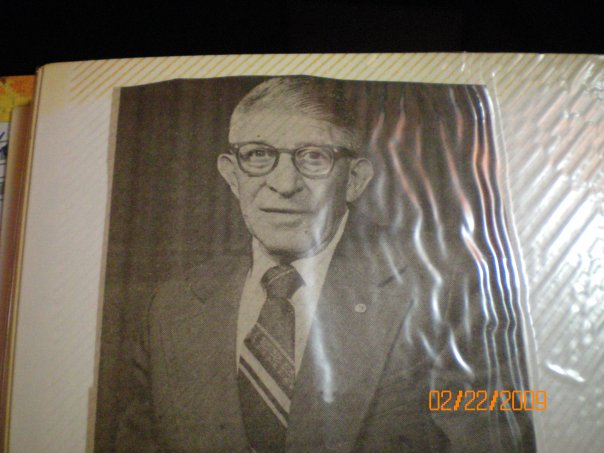
Joe Burchell
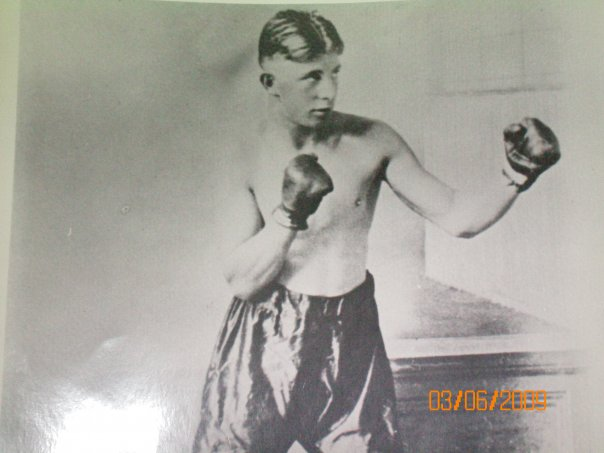
Joe Burchell — Howard's brother
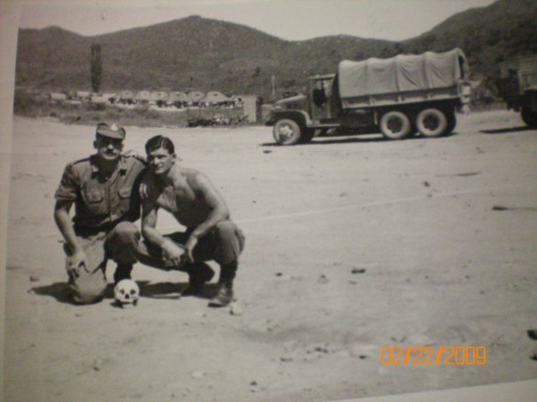
Leonard Burchell — Howard's brother
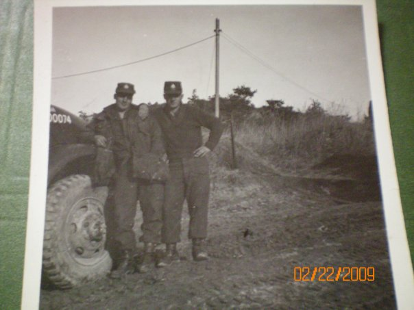
Robert Burchell — Howard's brother
Ernie Burchell & Family (Howard's Brother)
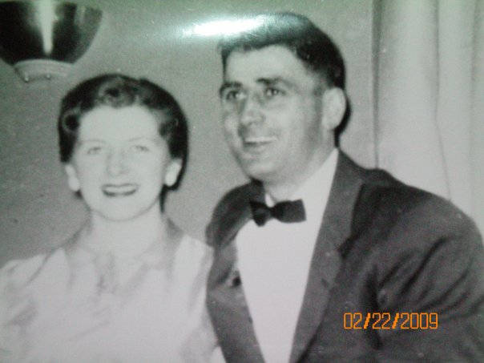
Ernie Burchell

Ernie Burchell — Linda's husband
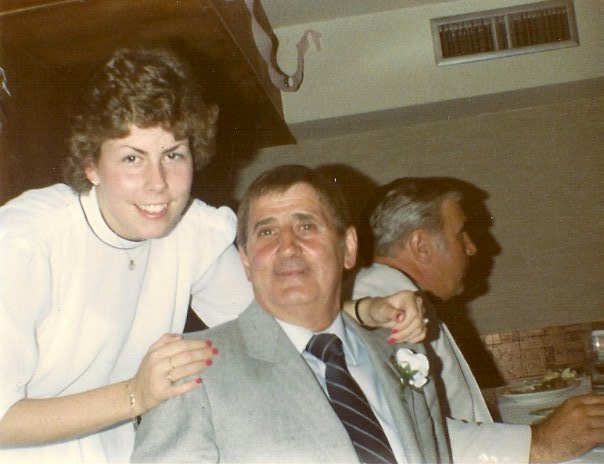
Ernie and Linda Burchell — father and daughter
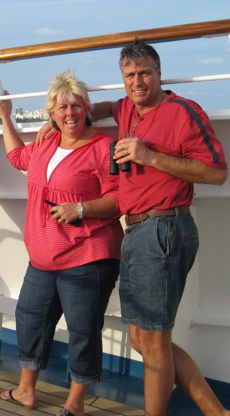
Linda Burchell with her husband — daughter of Ernie Burchell (Howard's brother)
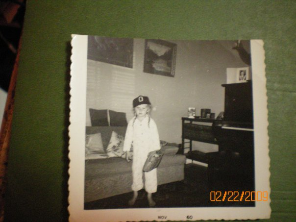
Linda Marie Burchell — Leonard's daughter
Thomas Burchell's Family (Howard's Son)
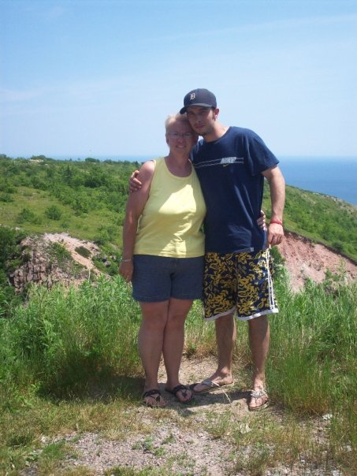
Rene Burchell with son Brad — her husband is Thomas Burchell (Howard's son)
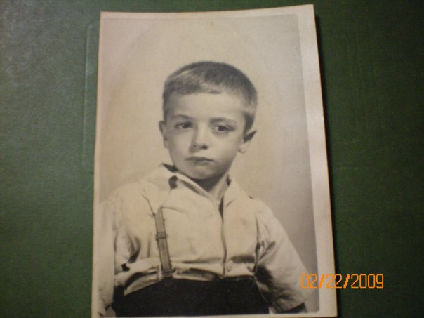
Patrick — Howard's son
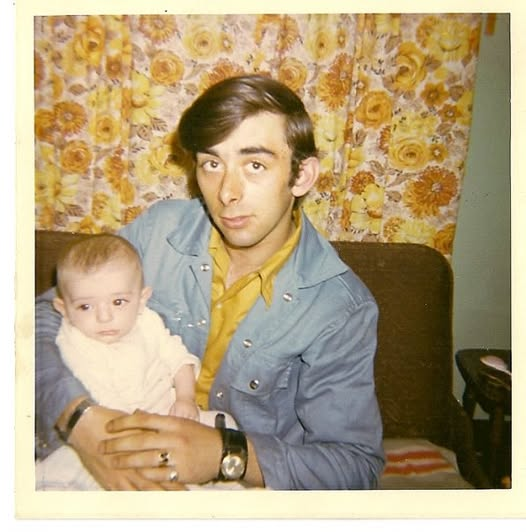
Ally Burchell with baby Alex (Howard's son)
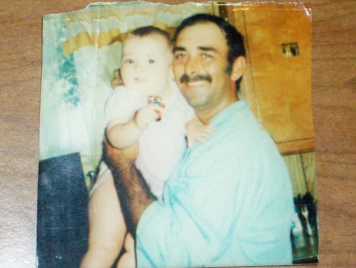
Ally Burchell's daughter
Butch Burchell & Family Gatherings
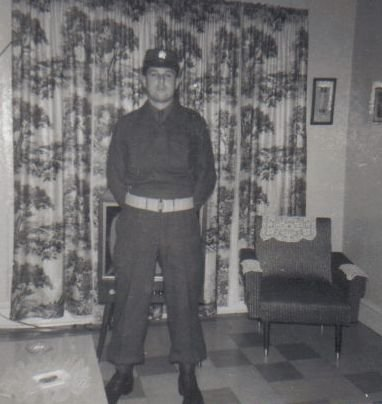
Butch Burchell
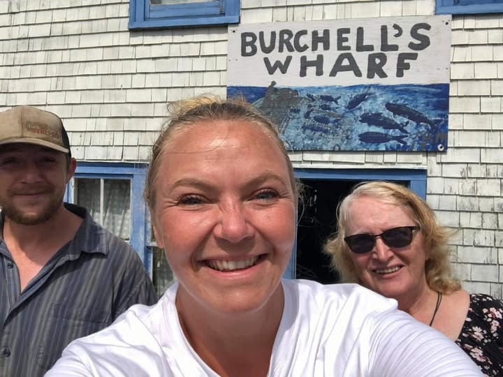
The Burchells at Margaret's Bay
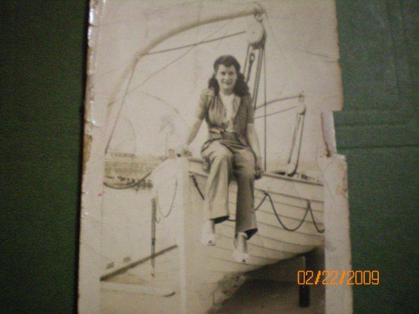
Unknown family member — can you help identify?
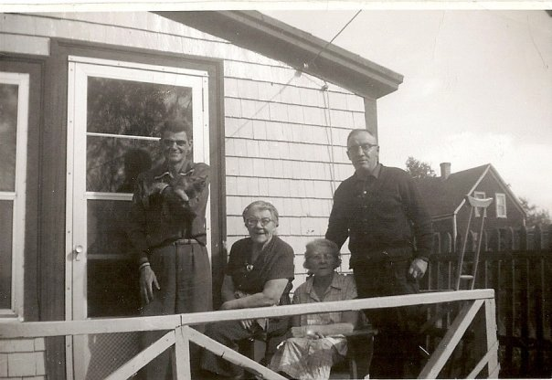
Unknown Burchell family members — can you help identify?